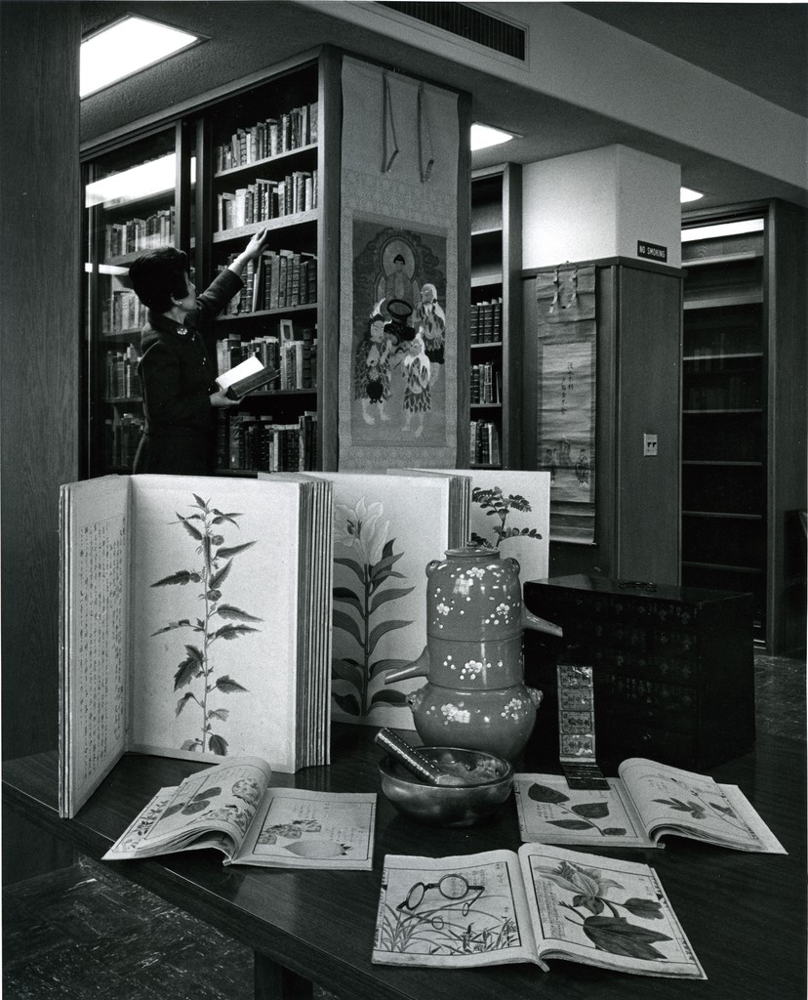

Archives is excited to provide access to the sketchbook of Phyllis Wrightson, which has been newly-digitized from within the Bernard Zakheim papers. Wrightson was Zakheim’s assistant during the painting of the frescoes inside UCSF’s Toland Hall, and the two later married.
Phyllis Wrightson, second from left. (from L to R: Joseph Allen, Phyllis Wrightson, Bernard Zakheim, and F. Stanley Durie). Source: https://calisphere.org/item/ark:/81983/s9mw27/
The sketchbook contains fascinating detail of the historical research which went into the mural, and includes notes, clippings, and remarkable sketches made by Wrightson in preparation for the painting of the murals. Wrightson’s sketchbook is notable for the way it illuminates the immense amount of collaborative effort that went into creating a mural such as the Toland Hall frescoes, and documents the both the creative process and aesthetic decisions which were a part of the project.
The digitization of Wrightson’s notebook has been another fruitful collaboration between Archives and our colleagues in other Library departments, spurred by the COVID-19 pandemic. We would especially like to thank Andy Panado — Collections Analyst — for his work to create the digital files for this valuable resource.
By Erin Hurley, User Services & Accessioning Archivist
One of UCSF Archives and Special Collections’ most famous and beloved collections is the Japanese Woodblock Print collection – a collection of over 400 colorful and informative woodblock prints on health-related themes, such as women’s health and contagious diseases like cholera, measles, and smallpox. According to the Library website dedicated to the prints, they “offer a visual account of Japanese medical knowledge in the late Edo and Meiji periods. The majority of the prints date to the mid-late nineteenth century, when Japan was opening to the West after almost two hundred and fifty years of self-imposed isolation.”[1] The collection has been used, most recently, in a documentary about woodblock prints to be aired on NHK, Japan’s public broadcasting network, and has been a subject of enduring interest to researchers. I’ve heard colleagues wonder aloud about how UCSF came to own this unique collection, so I did some research. Naturally, an enterprising curator and librarian – Atsumi Minami, MLS – is to thank for the collection’s arrival at UCSF.
Walters, Tom F., “Atsumi Minami with items from UCSF Library East Asian Collection,” 1968. UCSF History Collection.
While I was not able to find the exact dates of her employment at UCSF Library, I do know that Minami began working at UCSF Library in 1959, and soon took charge of a small collection of 70 titles of materials related to East Asian medicine started in 1963 by John B. de C.M. Saunders (a shortening of his full name, John Bertrand de Cusance Morant Saunders), then Provost and University Librarian.[1] Minami could read Japanese script, so she became responsible for the collection and was soon given free rein to begin collecting additional materials. In order to do this, Minami “traveled to Japan and China and purchased items from various smaller, private collections, acquiring the woodblock prints as well as hundreds of rare Chinese and Japanese medical texts, manuscripts, and painted scrolls.”[2] Her collecting efforts spanned over 30 years, and produced a collection with over 10,000 titles. It would appear that Minami was still working at UCSF when this informative article was written for a 1986 issue of UCSF Magazine.[3] At the time that article was published, the East Asian medicine collection was also the only active collection of its kind in the U.S., making it even more notable.
Another woman who was influential in shaping the East Asian collection was Ilza Veith, a German medical historian and former UCSF professor in both the Department of the History and Philosophy of Health Sciences and the Department of Psychiatry. Veith, who in 1947 was awarded the first ever U.S. Ph.D.in the History of Medicine from Johns Hopkins University, was also awarded later, in 1975, the most advanced medical degree conferred in Japan, the Igaku hakase, from Juntendo University Medical School in Tokyo. Veith was extremely knowledgeable about both Chinese and Japanese medicine, and, in her time at Hopkins, translated Huang Ti Nei Ching Su Wen, or The Yellow Emperor’s Classic of Internal Medicine – the oldest known document in Chinese medicine. Though the text has somewhat mythical origins that make its author and date a little difficult to determine, it probably dates from around 300 BC. Veith also helped shaped UCSF’s East Asian medicine collection by donating a number of her Japanese medical books.
“Ilza Veith,” 1968. UCSF History Collection.
I would encourage anyone interested in the collection to browse the prints on our website, and to read more about their history via a finding aid on the Online Archive of California. Archives and Special Collections also houses the Ilza Veith papers. While we don’t yet have an Atsumi Minami collection, we welcome donations and would appreciate any information that the present-day UCSF community has about this amazing woman.